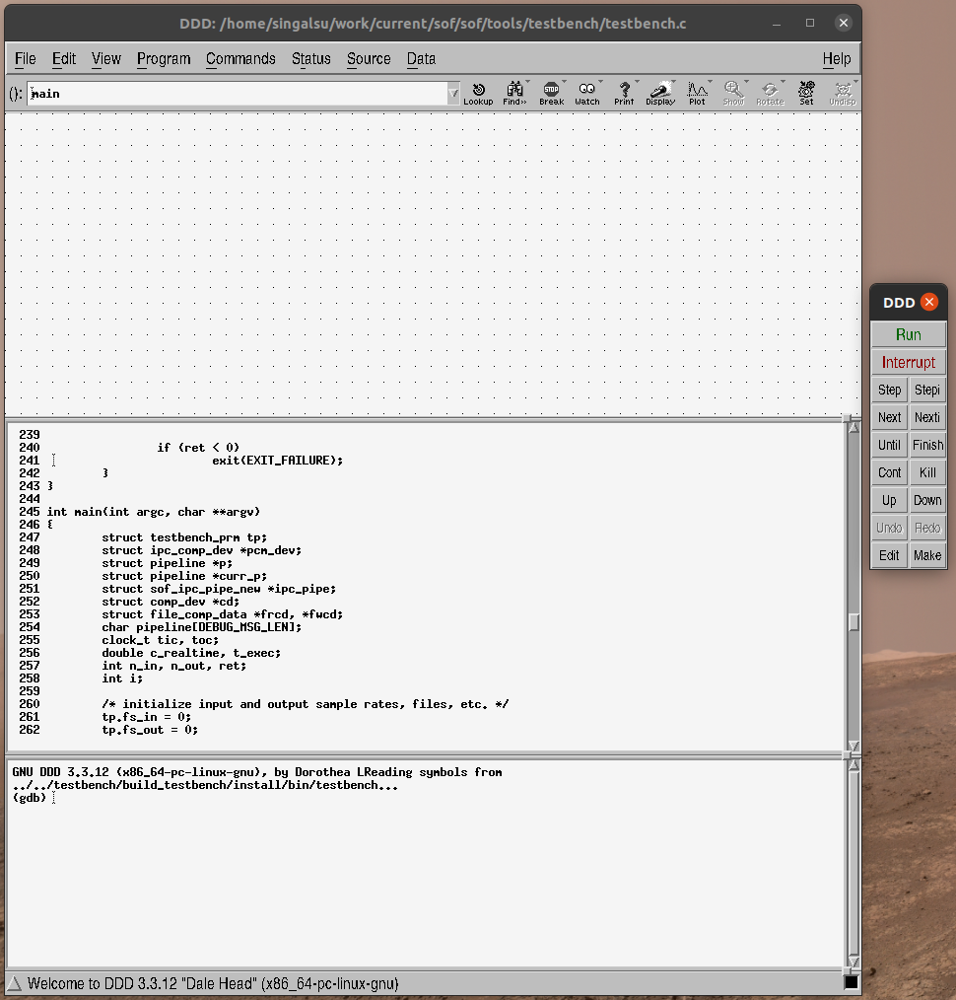
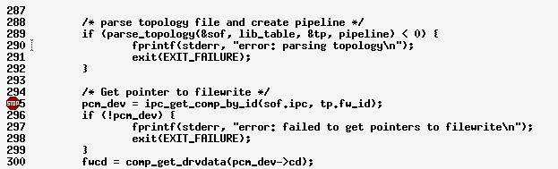
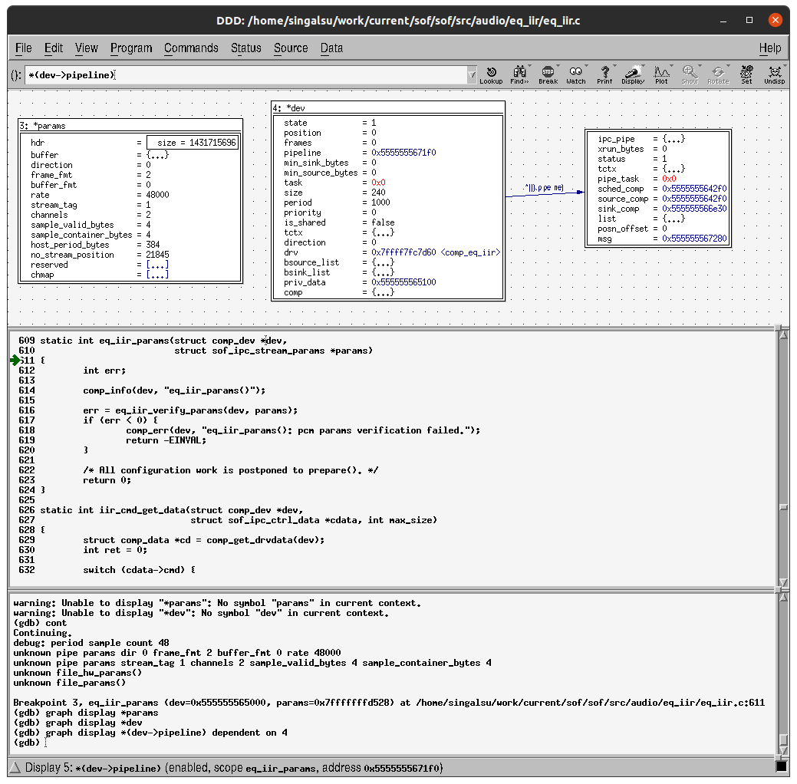

Debug Component in Testbench#
Overview#
The Sound Open Firmware (SOF) testbench provides a fast, deterministic execution sandbox on
the host workstation (Linux x86_64) or within cycle-accurate Xtensa DSP simulators
(xt-run). Because it executes real SOF processing components directly from user space,
developers can leverage standard debugging, profiling, and sanitization tools without the
latency and overhead of flashing target hardware, configuring JTAG probes, or streaming live
audio over hardware buses.
In the testbench environment, memory corruption, invalid pointer dereferences, or buffer overruns result in immediate segmentation faults or trap notifications with full backtraces, drastically reducing debugging turn-around times.
Building Testbench with Debug Symbols#
By default, production builds enable compiler optimizations (-O3), which may optimize
out local variables, inline critical functions, and reorder instruction sequences. For optimal
source-level debugging with GDB or LLDB, configure the CMake build with Debug mode and
disable optimizations:
cd ~/work/sof-imr-work
mkdir -p tools/testbench/build_testbench
cd tools/testbench/build_testbench
cmake -DCMAKE_BUILD_TYPE=Debug -DCMAKE_C_FLAGS="-O0 -g3" ..
make -j$(nproc)
make install
Alternatively, use the provided rebuild script:
scripts/rebuild-testbench.sh
Ensure that runtime shared libraries can be located by verifying LD_LIBRARY_PATH or
running from the top-level repository tree:
export LD_LIBRARY_PATH=tools/testbench/build_testbench/sof_ep/install/lib:tools/testbench/build_testbench/sof_parser/install/lib
Source-Level Debugging with GDB#
The native sof-testbench4 binary can be launched directly inside the GNU Debugger (GDB).
Pass the complete simulation arguments after --args:
gdb --args tools/testbench/build_testbench/install/bin/sof-testbench4 \
-r 48000 -c 2 -b S32_LE -p 1,2 \
-t tools/build_tools/topology/topology2/development/sof-hda-benchmark-eqiir32.tplg \
-i in.raw -o out.raw
Component Lifecycle Breakpoints#
Every SOF processing component conforms to a well-defined lifecycle managed by the Module Adapter interface. Setting breakpoints at each lifecycle transition allows inspecting configuration structures, memory allocations, and audio buffers step-by-step:
(gdb) # 1. Topology Parsing and IPC setup
(gdb) break tb_setup_widget_ipc
(gdb) break tb_parse_ipc4_comp_tokens
(gdb) # 2. Component Initialization (Allocates private context)
(gdb) break eq_iir_init
(gdb) break eq_iir_new
(gdb) # 3. Parameter Configuration (Stream format, channels, sample rate)
(gdb) break eq_iir_params
(gdb) # 4. Preparation (Coefficient calculation, filter delay lines)
(gdb) break eq_iir_prepare
(gdb) # 5. Stream Processing Loop (Cyclic audio frame transformation)
(gdb) break eq_iir_copy
(gdb) break eq_iir_s32_default
(gdb) # 6. Teardown and Cleanup
(gdb) break eq_iir_reset
(gdb) break eq_iir_free
Run the program inside GDB:
(gdb) run
Inspecting Component Data Structures#
When execution halts at comp_params() or comp_prepare(), examine the audio stream
parameters and device context:
(gdb) # Inspect stream audio parameters (PCM rate, format, channel count)
(gdb) print *params
$1 = {direction = 0, frame_fmt = 2, rate = 48000, channels = 2, buffer_fmt = 0}
(gdb) # Inspect the processing component device structure
(gdb) print *dev
$2 = {drv = 0x5555555c8120, state = 1, direction = 0, pipeline = 0x5555555e9400, ...}
(gdb) # Inspect component-specific private state
(gdb) print *(struct comp_data *)dev->priv_data
Inspecting Circular Audio Buffers#
During the cyclic execution of comp_copy(), the component consumes frames from its source
buffer and produces frames into its sink buffer. Inspecting the circular buffer pointers and
raw PCM contents helps identify buffer underflows, overflows, or phase misalignment:
(gdb) # Step into the processing loop
(gdb) continue
Continuing.
Breakpoint 5, eq_iir_copy (mod=0x5555555e9480) at src/audio/eq_iir/eq_iir.c:284
(gdb) # Inspect source and sink circular buffer metrics
(gdb) print *sourceb
$3 = {r_ptr = 0x7ffff7a0b000, w_ptr = 0x7ffff7a0b300, avail = 768, free = 1280, size = 2048, ...}
(gdb) print *sinkb
$4 = {r_ptr = 0x7ffff7a0c000, w_ptr = 0x7ffff7a0c000, avail = 0, free = 2048, size = 2048, ...}
(gdb) # Display the first 16 interleaved 32-bit PCM samples from the source buffer
(gdb) print /x ((int32_t *)sourceb->stream.addr)[0]@16
(gdb) # Display output samples produced in the sink buffer
(gdb) print /x ((int32_t *)sinkb->stream.addr)[0]@16
(gdb) # Step over code lines to trace execution
(gdb) next
Tip
To continuously observe variables during stepping, use GDB’s display command:
(gdb) display ((int32_t *)sourceb->stream.addr)[0]
(gdb) display ((int32_t *)sinkb->stream.addr)[0]
Graphical Debugging Workflows#
VS Code Integration#
Modern IDEs such as Visual Studio Code provide visual breakpoint management, call stack
navigation, and memory viewing via the native GDB/LLDB bridge. Add the following launch
configuration to .vscode/launch.json:
{
"version": "0.2.0",
"configurations": [
{
"name": "SOF Testbench (IPC4 GDB)",
"type": "cppdbg",
"request": "launch",
"program": "${workspaceFolder}/tools/testbench/build_testbench/install/bin/sof-testbench4",
"args": [
"-r", "48000",
"-c", "2",
"-b", "S32_LE",
"-p", "1,2",
"-t", "${workspaceFolder}/tools/build_tools/topology/topology2/development/sof-hda-benchmark-eqiir32.tplg",
"-i", "${workspaceFolder}/in.raw",
"-o", "${workspaceFolder}/out.raw"
],
"stopAtEntry": false,
"cwd": "${workspaceFolder}",
"environment": [
{ "name": "LD_LIBRARY_PATH", "value": "${workspaceFolder}/tools/testbench/build_testbench/sof_ep/install/lib" }
],
"externalConsole": false,
"MIMode": "gdb",
"setupCommands": [
{
"description": "Enable pretty-printing for gdb",
"text": "-enable-pretty-printing",
"ignoreFailures": true
}
]
}
]
}
Classic DDD (Data Display Debugger)#
For developers working in lightweight X11 environments, the Data Display Debugger (DDD) provides graphical visualization of dynamic pointer graphs and circular data buffers:
sudo apt install ddd
ddd tools/testbench/build_testbench/install/bin/sof-testbench4

Figure 322 Figure 318: The DDD debugger initial interface.#
Scroll to the topology parsing sequence or component initialization and set breakpoints using right-click:

Figure 323 Figure 319: Setting component lifecycle breakpoints in DDD.#
Inspect complex audio driver structs and pointer graphs visually:

Figure 324 Figure 320: Visualizing pointer graphs and audio buffer structures in DDD.#
Memory Leak and Safety Analysis with Valgrind#
Valgrind Memcheck executes the testbench within an instrumented virtual CPU, detecting invalid heap memory reads/writes, out-of-bounds array access, use of uninitialized memory, and heap memory leaks that might otherwise pass silently on host workstations but cause intermittent crashes on embedded DSP targets.
Running Valgrind Directly#
Invoke Valgrind directly on the testbench command line:
valgrind --leak-check=full \
--show-leak-kinds=all \
--track-origins=yes \
--error-exitcode=1 \
tools/testbench/build_testbench/install/bin/sof-testbench4 \
-r 48000 -c 2 -b S32_LE -p 1,2 \
-t tools/build_tools/topology/topology2/development/sof-hda-benchmark-eqiir32.tplg \
-i in.raw -o out.raw
Running Valgrind via Helper Script#
The scripts/sof-testbench-helper.sh script features integrated Valgrind testing via the
-v switch:
scripts/sof-testbench-helper.sh -v -m eqiir
Note
When reviewing Valgrind reports, distinguish between one-time harness initialization
allocations in testbench.c and leaks originating inside component lifecycle functions
(such as missing rfree() calls inside comp_free()). All component lifecycle leaks
must be resolved before deploying firmware to physical DUTs.
Compiler Sanitizers (ASan and UBSan)#
AddressSanitizer (ASan) and UndefinedBehaviorSanitizer (UBSan) offer high-performance, compiler-level memory error detection that executes significantly faster than Valgrind. Compile the testbench with sanitizers enabled:
cd tools/testbench/build_testbench
cmake -DCMAKE_BUILD_TYPE=Debug \
-DCMAKE_C_FLAGS="-fsanitize=address,undefined -fno-omit-frame-pointer -g" ..
make -j$(nproc)
make install
Run the testbench normally. If an out-of-bounds memory access, stack overflow, or integer undefined behavior occurs, the runtime immediately aborts execution and outputs a detailed, symbolicated call stack identifying the offending source file and line number.
Profiling and Hotspot Analysis#
Optimizing DSP audio algorithms requires profiling CPU cycle consumption, identifying inner loop hotspots, and verifying algorithmic Million Cycles Per Second (MCPS) budgets.
Host Workstation Profiling with Linux perf#
To profile host x86_64 execution and identify CPU-intensive functions:
perf record -g tools/testbench/build_testbench/install/bin/sof-testbench4 \
-r 48000 -c 2 -b S32_LE -p 1,2 \
-t tools/build_tools/topology/topology2/development/sof-hda-benchmark-eqiir32.tplg \
-i in.raw -o out.raw
perf report
Cycle-Accurate DSP Profiling with Xtensa xt-run#
While host profiling reveals general algorithmic complexity, it does not reflect Xtensa HiFi
DSP register architecture, VLIW SIMD execution, or zero-overhead hardware loops. Cycle-accurate
profiling requires building for an Xtensa target and simulating with Cadence xt-run.
Configure Environment and Build Xtensa Testbench:
export XTENSA_TOOLS_ROOT=~/xtensa/XtDevTools export ZEPHYR_TOOLCHAIN_VARIANT=xt-clang scripts/rebuild-testbench.sh -p mtl source tools/testbench/build_xt_testbench/xtrun_env.sh
Execute Simulation with Cycle Profiling:
$XTENSA_PATH/xt-run --profile=profile.out \ tools/testbench/build_xt_testbench/sof-testbench4 \ -r 48000 -c 2 -b S32_LE -p 1,2 \ -t tools/build_tools/topology/topology2/development/sof-hda-benchmark-eqiir32.tplg \ -i in.raw -o out.raw
Generate Call Graph and Flat Profile Report:
$XTENSA_PATH/xt-gprof tools/testbench/build_xt_testbench/sof-testbench4 profile.out > profile-eqiir.txt less profile-eqiir.txt
Automated Profiling via Helper Script#
The scripts/sof-testbench-helper.sh script automates Xtensa simulation, profiling data
collection, and report generation using the -x and -p flags:
scripts/sof-testbench-helper.sh -x -m eqiir -p profile-eqiir.txt
The generated flat profile reveals cycle consumption per function call:
Flat profile:
self total
cumulative self cycles cycles
% cycles cycles calls /call /call name
(K) (K) (K) (K)
56.73 10144.51 10144.51 137088 0.07 0.07 iir_df1
12.91 12453.23 2308.72 1428 1.62 8.72 eq_iir_s32_default
3.23 13031.59 578.36 4290 0.13 3.61 module_adapter_copy
2.22 13429.03 397.44 2860 0.14 0.67 file_process
2.14 13811.37 382.34 3178 0.12 0.13 memmove
Batch Profiling Across Component Suites#
To profile all benchmark topologies across a complete platform suite, run
scripts/sof-testbench-build-profile.sh:
scripts/sof-testbench-build-profile.sh -p mtl -d tools/testbench/profile
The resulting reports in tools/testbench/profile/ include individual flat profiles, call
trees, and estimated MCPS metrics for every processing component in the firmware repository.